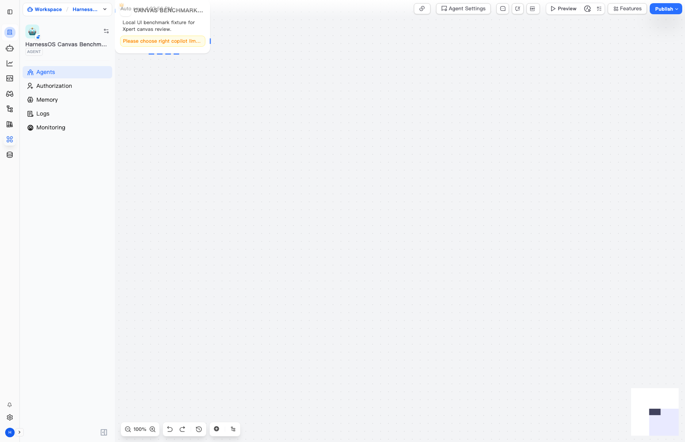
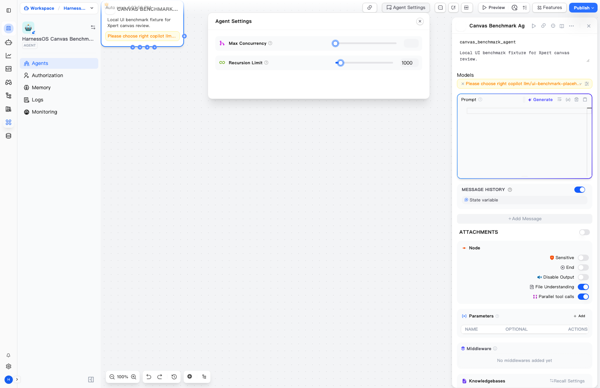
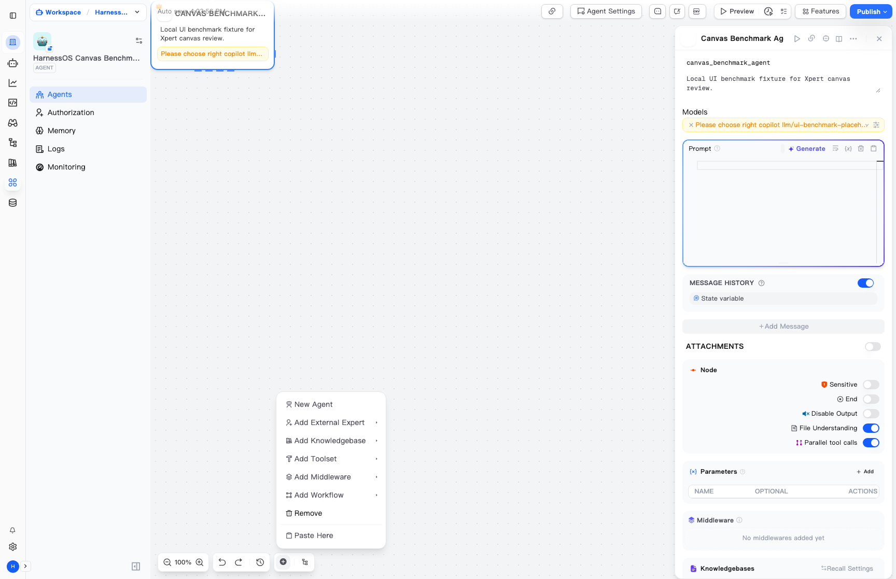
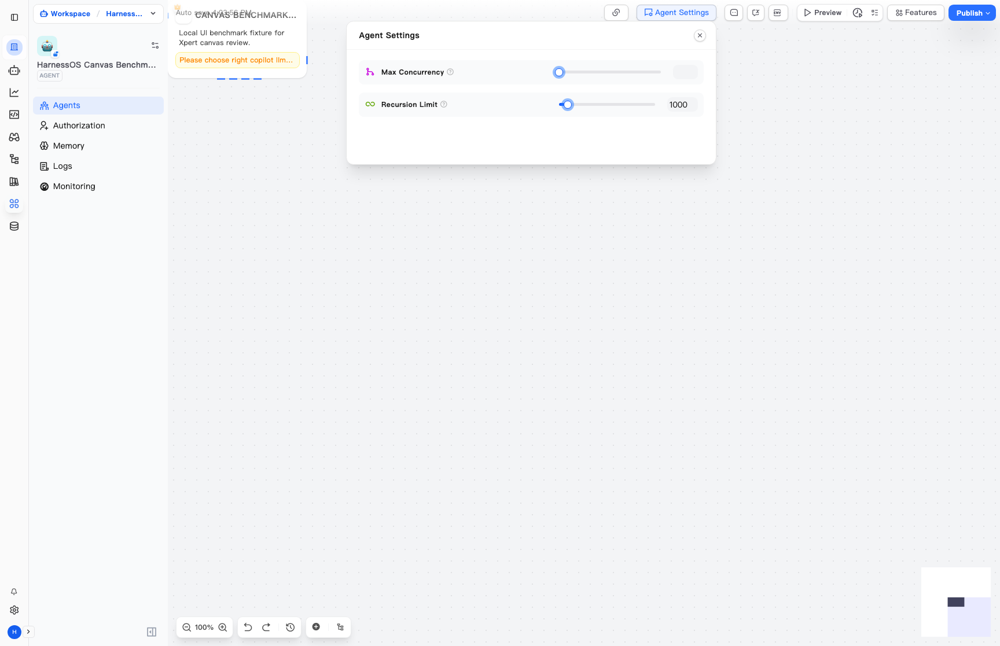
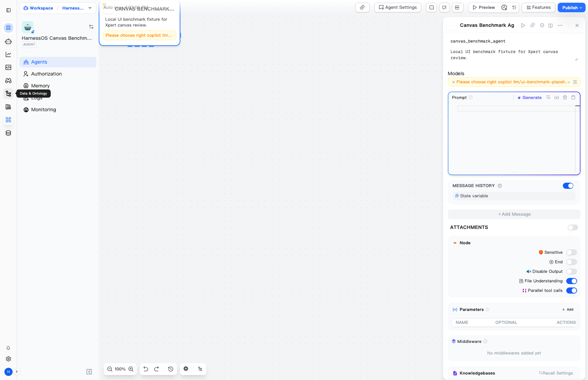

Xpert 画布交互专项体验审计
本页基于本地部署的 Xpert WebApp 和 Playwright 截图，聚焦用户给出的画布体验： 节点编排、端口连线、属性检查器、实体菜单、自动布局、发布预览和工作台信息架构。 结论用于 HarnessOS V12-V15 前端追赶规划，不代表直接复制 Xpert 代码。

为绕过本地模型配置向导阻塞，本次进入画布使用了本地 benchmark fixture 和 placeholder model。 这些截图证明“Xpert 画布 UI 与交互结构已被实际打开和操作”，不证明 Xpert 模型调用或生产运行能力。
本地画布可进入
成功进入 /xpert/x/{id}/agents，页面显示 Workspace、Agent、Authorization、Memory、Logs、
Monitoring、Auto save、Agent Settings、Preview、Features、Publish。
节点可选中并打开检查器
选中 Agent 节点后，右侧检查器展示模型、Prompt、Message History、附件、参数、中间件、知识库、工具、重试、 fallback 和输出结构。
未验证真实模型执行
本次关注画布体验。页面中出现 “Please choose right copilot llm” 提示，说明 fixture 模型不可作为真实运行证据。
Xpert 画布交互拆解
| 交互层 | Xpert 体验 | 对 HarnessOS 的追赶要求 |
|---|---|---|
| 空间架构 | 左侧全局图标栏 + Xpert 实体侧栏 + 无限点阵画布 + 顶部发布/预览工具栏 + 底部画布工具条 + 缩略图。 | 不能只做 TUI 或静态 drawio，需要 Product Console / Studio 级别的画布工作台。 |
| 节点与端口 | 节点有输入/输出端口、选中态、边界高亮、快捷加号、连接线和可重排位置。 | WorkflowSpec / Station / Agent / Tool / Evidence 需要有可编辑节点模型和端口类型。 |
| 右侧检查器 | 节点属性不是弹窗，而是常驻侧栏，覆盖模型、Prompt、记忆、附件、工具、知识库、错误处理和输出结构。 | HarnessOS 需要把 Agent role/goal/memory/tools/MCP/skills/evidence 做成同一检查器，而不是散落报告。 |
| 添加实体 | 底部/上下文菜单支持 New Agent、External Expert、Knowledgebase、Toolset、Middleware、Workflow 等。 | 需要插件/能力目录入口，并与安全边界绑定；不可直接变成 unrestricted executor。 |
| 画布操作 | 缩放、撤销/重做、历史、添加、自动布局、缩略图、拖拽移动形成低代码工作台基本体验。 | 后续需要实现 autosave draft、undo/redo history、layout engine、minimap、browser E2E 验收。 |
| 发布与预览 | 顶部直接暴露 Preview、Features、Publish，编辑和试跑之间切换非常短。 | HarnessOS 需要保留人工确认和 evidence chain，同时补预览入口和发布前门禁。 |




源码对应关系
/Users/Zhuanz/Desktop/workspace/xpert/apps/cloud/src/app/features/xpert/studio/studio.component.html
使用 f-flow、f-canvas、f-background、f-connection、
fNode、fCreateConnection、fReassignConnection 和
fNodePositionChange。
/Users/Zhuanz/Desktop/workspace/xpert/apps/cloud/src/app/features/xpert/studio/components/agent/agent.component.html
定义 Agent 输入/输出端口、节点状态、模型、工具/知识/工作流连接点。
/Users/Zhuanz/Desktop/workspace/xpert/apps/cloud/src/app/features/xpert/studio/components/context-menu/context-menu.component.html
提供 New Agent、External Expert、Knowledgebase、Toolset、Middleware、Workflow 等画布实体入口。
/Users/Zhuanz/Desktop/workspace/xpert/apps/cloud/src/app/features/xpert/studio/header/header.component.html
暴露 Auto save、Agent Settings、Preview、Features、Publish。
/Users/Zhuanz/Desktop/workspace/xpert/apps/cloud/src/app/features/xpert/studio/domain/layout/layout.ts
使用 elkjs 处理横向主链和纵向子树布局。
HarnessOS 应吸收的设计
必须避免的误区
本次审计产物
| 文件 | 用途 |
|---|---|
xpert-canvas-survey-results.json |
Playwright 操作日志、页面 URL、截图路径、页面文字摘录。 |
xpert-canvas-survey-report.md |
机器生成的原始 Markdown 截图清单。 |
inspect-xpert-canvas.mjs |
本地 Xpert canvas 自动化体验脚本。 |
xpert-canvas-*.png |
画布加载、节点选中、设置面板、添加菜单、自动布局等截图证据。 |